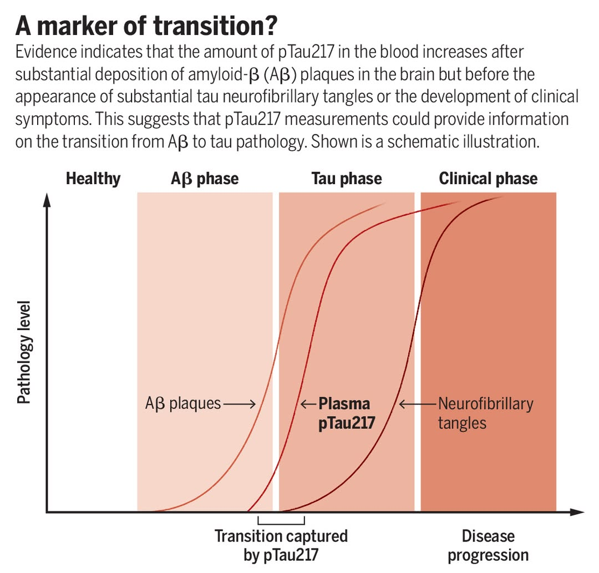
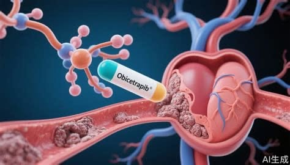

The pTau217 blood test is rapidly transforming Alzheimer’s care.
It makes early detection possible, so that treatment can be started early, even before symptoms become noticeable.
Louis shares a Science Perspective on pTau217, a blood biomarker that detects early Alzheimer's pathology non-invasively, potentially years before symptoms.
The pTau217 blood test is rapidly transforming Alzheimer’s care.
It makes early detection possible, so that treatment can be started early, even before symptoms become noticeable.
In a new Science Perspective, researchers highlight a newly developed blood-based biomarker, pTau217, which allows detection of early pathological changes associated with Alzheimer’s disease without invasive procedures.
Learn more:
Paper · Science · 2026Tracking the turning point in Alzheimer’s diseaseA blood biomarker reveals the mechanistic shift from amyloid to tau pathologyscience.org
Louis explains Lumipulse, approved in 2025, measures the pTau217/beta-amyloid 1-42 ratio, one of three tests (with PET and spinal tap) that can confirm amyloid for diagnosis.

In the phase 3 BROADWAY trial, obicetrapib 10 mg cut LDL-C by 29.9%. A biomarker substudy of 1,535 participants (367 APOE4 carriers) found reduced p-tau217, greatest in APOE4 carriers, shaping a planned Alzheimer's prevention trial.

Louis notes obicetrapib, a CETP inhibitor, may treat both CVD and Alzheimer's. A Phase 2 prevention trial will include 75% APOE4 carriers. BROADWAY showed slower p-tau217 rise over 12 months.
Louis shares a Swedish cohort of about 1,900 adults aged 60+ followed up to 15 years, in which healthier diet patterns were tied to lower dementia risk, including in people with high-risk blood markers such as pTau217. The strongest finding was for a low inflammatory-potential diet.
Louis shares Joel Kahn's note on the AD Detect lab panel, whose new data predict memory decline, and reminds readers that heart disease risk factors overlap with dementia risk. The idea is an early warning while lifestyle changes still matter.
Louis shares a pre-specified BROADWAY substudy (1,535 patients) in which obicetrapib improved five Alzheimer's biomarkers, with the largest benefit in APOE4/4 homozygotes. Caveats are that these are biomarkers, not cognitive outcomes, in a subgroup needing replication.